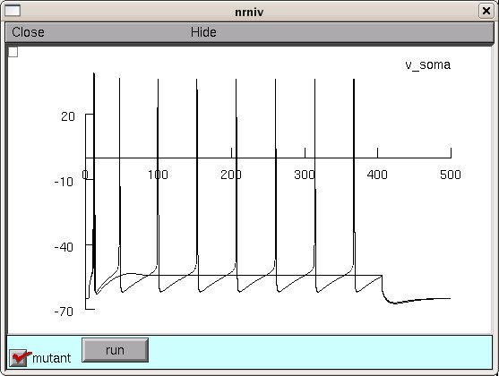

NEURON mod files from the paper: Miceli et al, Neutralization of a unique, negatively-charged residue in the voltage sensor of K(V)7.2 subunits in a sporadic case of benign familial neonatal seizures, Neurobiol Dis., ePub before print (2009) In this paper, the model revealed that the gating changes introduced by a mutation in K(v)7.2 genes encoding for the neuronal KM current in a case of benign familial neonatal seizures, increased cell firing frequency, thereby triggering the neuronal hyperexcitability which underlies the observed neonatal epileptic condition. The fig6a.hoc reproduces the traces shown in Fig.6a of the paper. Under linux/unix systems: to compile the mod files use the command nrnivmodl and run the simulation hoc file with the command nrngui fig6a.hoc Under Windows systems: to compile the mod files use the "mknrndll" command. A double click on the simulation file fig6a.hoc will open the simulation window. Under MAC OS X: to compile the mod files drag and drop the extracted folder onto the mknrndll icon. Drag and drop the mosinit.hoc file onto the nrngui icon. Once the simulation is started you can press the run button. Then when done click on the mutant box. Click on the graphs upper left pull down menu box and select "Keep lines". Finally, press the run button again and you should get a graph that combines the black and red traces of Fig. 6a and looks something like:  Questions on how to use this model should be directed to michele.migliore@pa.ibf.cnr.it